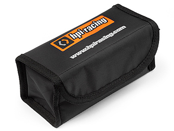

Deep down inside, Phantom batteries (both P2 and P3) are standard Lithium Polymer batteries. As such knowing how to treat them well can make the difference between a few dozen cycles (charges) and hundreds.
These are the top tips for helping you keep your batts at maximum performance for as long as possible.
A well maintained LiPo gives you longer, safer flights.
Respect the LiPo
Tip 1 Damaged LiPos are bad news
If your battery appears distorted, puffed (i.e. bloated), cracked or shows any sign of damage dispose of it immediately. Damaged LiPos may explode quite destructively.
Tip 2 Never overcharge
Overcharging a LiPo can have similar effects. Charging a LiPo over its permitted voltage of 4.2v (or 4.35v for HV LiPos) per cell may cause it to explode. Thankfully using a standard Phantom charger will protect you from this. Despite this never charge your LiPos unattended, its just not worth it.
Tip 3 Store securely
You’ll see a theme emerging here. Even when left alone in storage a LiPo can, rarely, become dangerous. So always store your batteries in non-flammable containers.
An additional tip: store them between 5C and 25C (41F – 77F)

Maximize its performance
Tip 4 Never discharge completely
Completely discharging a LiPo will most likely render it useless, permanently. Even if it doesn’t it will compromise its performance severely. Aim to land with 25% capacity still left in the battery – anything less than that will begin to reduce its performance and life.
Tip 5 Never store fully charged
All LiPo manufacturers (including DJI) recommend storing your LiPos at 50-60% charge. Many recommend against storing fully charged for more than 24 hours. Unfortunately DJI’s auto-discharge needs at least 72 hours and wearing your Phantom’s motors to discharge isn’t advisable.
The simplest, safest and most cost effective option is using a dedicated discharge device such as the Phantom Angel.
A deeper dive
Deep dive 1 Terminology
Amps – Each LiPo battery will hold a certain amount of current. This is measured in milliamps (mA). Other things being equal, the more mA the longer your flights.
Cells – A single LiPo cell has a nominal voltage of 3.7v. When higher voltage is required, multiple cells are connected to form a single battery. For example, Phantom 2 batteries are 3 cell (shown as 3S) and Phantom 3 batteries are 4 cell (4S).
Watt/hours – Watt/hours gives you the total power a battery can give and is the product of volts x amps. So a 5A (5000mA) 3S battery is 55.5Wh. This means it will run a 100W light bulb for just over half an hour.
C rating – The battery’s C rating tells you how quickly the battery can be discharged. A 10C battery could be discharged at a rate 10 times its capacity. So a 5500mah 10C battery could be discharged at 5.5 x 10 = 55A, so in 6 minutes. Most LiPos give two C ratings, continuous and peak or burst, which refers to short peaks in current.
Deep dive 2 Balance charging
A multi-cell LiPo battery will appear as a single battery of, say, 11.1v but in reality is three batteries (or cells) of 3.7v. When charging or discharging such a LiPo, tips #1 (never overcharge) and #4 (never over discharge) apply to each cell independently.
Over time cells can lose “synchronisation”, so one cell may be at 3.4v and another at 3.3v. In order to bring them back into sync and make sure that each cell is never over or under charged, balance chargers are used which measure each cell in its own right.
DJI intelligent batteries handle this themselves.
Deep dive 3 Remaining capacity
It may sound surprising but telling how much current is left in a LiPo at any point in time is surprisingly difficult to estimate accurately. That’s why you’ll see laptops and mobile phones going from as much as 10% to empty in a matter of minutes.
The simplest method, and the one used by practically all devices, is to measure the voltage output at any point in time. There are many reasons this is not accurate:
a) Load affects voltage. A LiPo at rest and a LiPo under load will give two completely different readings
b) Age, wear and amount of usage affect voltage
Temperature also makes a difference. Note that flying in cold weather will reduce your flight time (if you ever owned a GoPro you’ll notice how it keeps itself warm – that’s why!)
Each LiPo brand and model has its own voltage to capacity curve – and none of them are linear
The other method is to discharge as much as possible and the measure how many amps can be put back into the cell. That’s exactly why DJI requires a full discharge and re-charge of its intelligent batteries every 20 cycles or so – so that it can re-calibrate its calculations.
Deep dive 4 DJI's recommended deep discharge every 20 cycles
This is quite an interesting topic as DJI is putting pilots between a rock and a hard place by asking them to discharge their LiPos way below the 25% threshold (tip #4). The reason this is necessary for DJI batteries is because of the difficulties in determining actual remaining capacity (deep dive #3). As a battery is used, its chemistry and its behaviour changes and the calculations regarding % capacity remaining that were valid when the battery was new begin getting inaccurate.
To overcome this DJI asks you to discharge the battery fully and then charge fully. In the process the battery counts how many mah are put back into the battery and recalibrates its calculations.
So, on the one hand discharging will affect your battery's life and performance and on the other hand not discharging will get your capacity indications wrong and won't let you enjoy the battery to its fullest. Rock and hard place.
My opinion (and this is all it is) is that deep discharging every 20 cycles is too often - I can live with a small variation in the % capacity figures. When I start seeing larger variations that's when I take the plunge and deep discharge.
Deep dive 5 Additional points
Don’t charge LiPos that are hot (as they tend to be right after a flight) or colder than 10C / 50F
Take extra care when travelling with LiPos as airlines do not allow LiPos in the hold - you have to carry them with you on the plane and often there are restrictions on the number of LiPos you can take. Refer to your airline's policy before travelling
LiPos don’t have a memory effect (like older batteries used to), so there’s no need to flily discharge and charge them
LiPos maintain their charge exceptionally well. They lose around 1% per month of storage
When using mlitiple batteries in series or in parallel make sure they are batteries of the same type, manufacturer, age and state. They sholid be as close to identical as possible
When the time comes to dispose of a LiPo it is advisable to first discharge them as much as possible (as long as they’re not damaged!) and then soak them in salt water for two weeks (half a cup of salt per gallon of water). This will neutralise them and make them safe for disposal
You’re now ready to keep your LiPos happy and performant for hundreds of cycles.
I hope you enjoyed this short guide to all things LiPo.